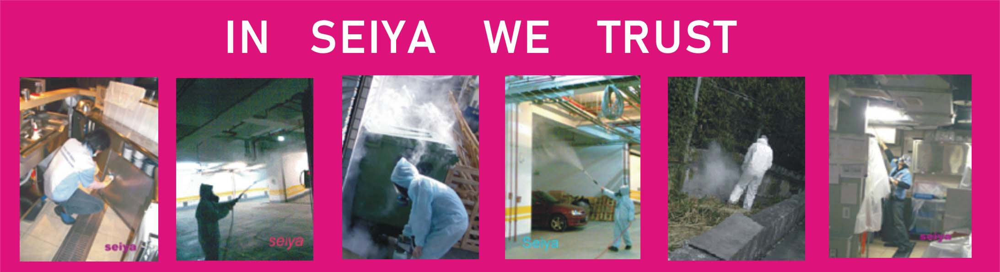

環藥病媒字63-163號
大部份的害蟲普遍而言是人類生活習慣不良或是居住環境衛生不好所引起，因此環境衛生為預防害蟲之最重要任務，就可達到事先預防效果,在許多研究所顯示,長期使用化學藥劑消毒區,當地之 病虫只有在短期減少,長期來看並未減少,反而是用物理法(環境改善及阻斷)加強,其效果才易見效,並且這些化學物對人體造成傷害,是人們不易發覺的. 因此在環境用藥部份必需依時及地點有所調整.我們並非最便宜的消毒公司,但我們卻是性價比最高,最了解藥劑的使用安全,而用藥安全 是國人常忽略之重要措施,環境用藥依法規分為一般與特殊用藥,前者是一般民眾皆可使用,後者是領有牌照之病媒防治業者與其專業技術人員方可使用,在先進國家會持續以臨床研究結果,針對於某些對生物與環境影響較大之藥劑會予以限制或禁止使用與販售,.例如 陶斯松.芬普尼(致癌)等,很遺憾在國內尚普遍使用甚至賣場即可隨意買到.